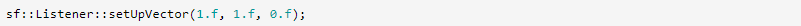
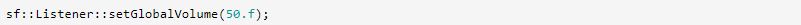
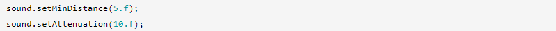
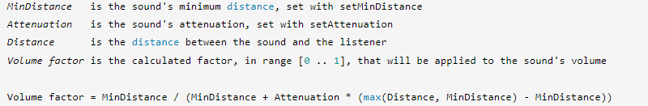

Пространственность: Звуки в 3D
Вступление
По умолчанию звуки и музыка воспроизводятся на полную громкость в каждом динамике; они не пространственные.
Если звук издается объектом, который находится справа от экрана, вы, вероятно, захотите услышать его из правого динамика. Если позади плеера воспроизводится музыка, вы хотели бы услышать ее через задние динамики вашей звуковой системы Dolby 5.1.
Как этого добиться?
Пространственные звуки моно
Звук может быть пространственным только в том случае, если он имеет один канал, то есть если это монофонический звук.
Пространственная обработка отключена для звуков с большим количеством каналов, поскольку они уже явно определяют, как использовать динамики. Это очень важно иметь в виду.
Слушатель
Все звуки и музыку в вашем звуковом окружении будет слышать один актер: слушатель. То, что выводится из ваших динамиков, определяется тем, что слышит слушатель.
Класс, определяющий свойства прослушивателя, — sf::Listener. Поскольку прослушиватель уникален в среде, этот класс содержит только статические функции и не предназначен для создания экземпляров.
Во-первых, вы можете установить положение слушателя в сцене:
Если у вас есть 2D-мир, вы можете просто использовать везде одно и то же значение Y, обычно 0.
Помимо его положения, вы можете определить ориентацию слушателя:

Здесь слушатель ориентирован по оси +X. Это означает, что, например, звук, издаваемый в точке (15, 0, 5), будет слышен из правого динамика.
Вектор «вверх» слушателя по умолчанию установлен в (0, 1, 0), другими словами, верхняя часть головы слушателя указывает на +Y. Вы можете изменить вектор «вверх», если хотите. Хотя это редко бывает необходимо.
Это соответствует тому, что слушатель наклоняет голову вправо (+X).
Наконец, слушатель может настроить общую громкость сцены:
Значение громкости находится в диапазоне [0 .. 100], поэтому установка его на 50 уменьшает его до половины исходного объема.
Конечно, все эти свойства можно прочитать с помощью соответствующих функций получения.
Источники звука
Каждый источник звука, предоставляемый SFML (звуки, музыка, потоки), определяет одни и те же свойства пространственной обработки.
Основным свойством является положение источника звука.
Эта позиция является абсолютной по умолчанию, но при необходимости она может быть относительно слушателя.
Это может быть полезно для звуков, издаваемых самим слушателем (например, выстрел из оружия или шаги). У этого также есть интересный побочный эффект отключения пространственной обработки, если вы установите положение источника звука в (0, 0, 0). Непространственные звуки могут потребоваться в различных ситуациях: звуки графического интерфейса (щелчки), фоновая музыка и т. д.
Вы также можете установить коэффициент ослабления источников звука в зависимости от их расстояния до слушателя.
Минимальное расстояние — это расстояние, на котором звук будет слышен с максимальной громкостью. Например, более громкие звуки, такие как взрывы, должны иметь большее минимальное расстояние, чтобы их можно было услышать издалека. Обратите внимание, что минимальное расстояние 0 (звук находится внутри головы слушателя!) приведет к неправильной пространственной пространственности и приведет к незатуханию звука. 0 — недопустимое значение, никогда не используйте его.
Затухание является мультипликативным фактором. Чем больше затухание, тем меньше будет слышно, когда звук удаляется от слушателя. Чтобы получить незатухающий звук, вы можете использовать 0. С другой стороны, использование значения, подобного 100, сильно ослабит звук, что означает, что он будет слышен только очень близко к слушателю.
Вот точная формула затухания, если вам нужны точные значения:
